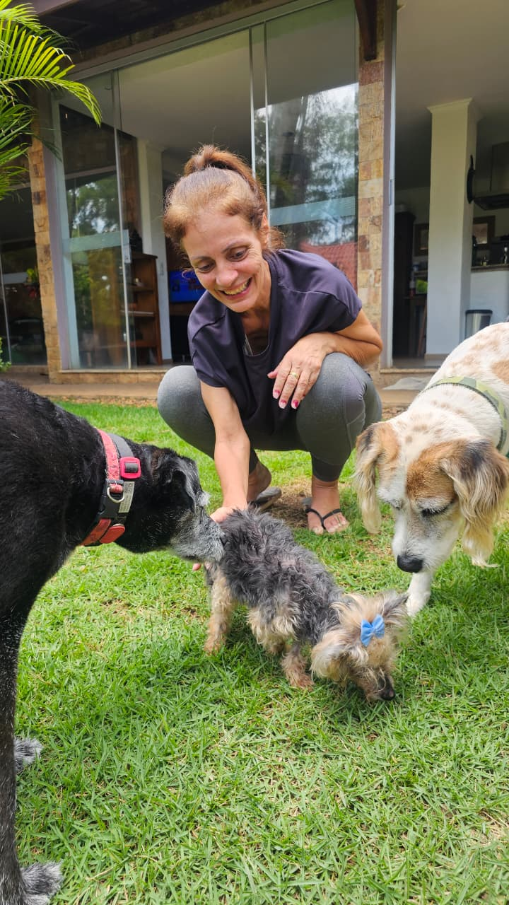
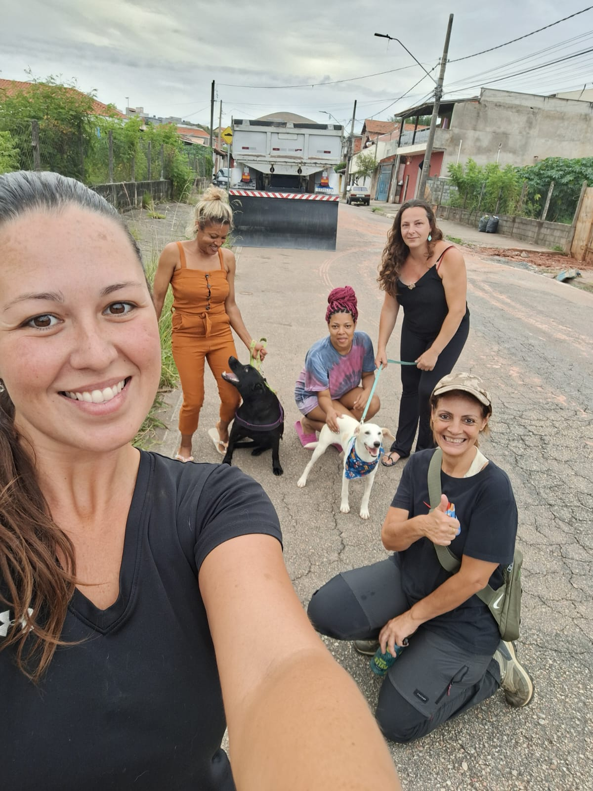
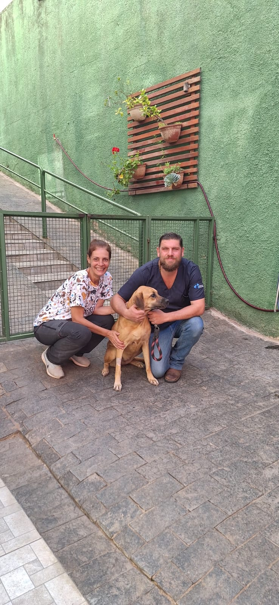

Doe via Pix
Use a chave ilustrativa para experimentar o fluxo de doação.
Proteção animal em Araçariguama/SP
Cada gesto de solidariedade ajuda a construir um futuro com mais cuidado, respeito e esperança para os animais de Araçariguama.


Moradores de Araçariguama, voluntários e parceiros locais se mobilizam para acolher, alimentar e buscar novas oportunidades para animais que precisam de cuidado.
O trabalho nasce da colaboração: cada pessoa contribui como pode, com tempo, recursos, serviços ou divulgação. Nosso compromisso é agir com respeito à vida animal e tornar cada apoio compreensível para a comunidade.
Coordenação demonstrativa: Patrícia Graziano e rede de moradores voluntários de Araçariguama.
Escolha a forma mais simples para você. Este protótipo demonstra a jornada de contribuição sem realizar pagamentos reais.
Use a chave ilustrativa para experimentar o fluxo de doação.
Atualizada em 22 de novembro de 2026
R$ 3.250,00 arrecadados
Meta: R$ 5.000,00
Leve sua contribuição ao ponto parceiro demonstrativo e ajude a manter o cuidado diário.
Acompanhe como cada contribuição se transforma em cuidado, saúde e qualidade de vida para os animais.

A adoção responsável é um compromisso de carinho, cuidado e respeito para toda a vida do animal. Entre em contato com nossa equipe para conhecer o processo demonstrativo.
Conte um pouco sobre sua rotina e seu lar.
Converse com os voluntários e encontre uma conexão.
Prepare uma adaptação segura e responsável.
Pipoca e o processo de adoção são fictícios neste protótipo.
Respostas rápidas sobre doações, adoção e participação.